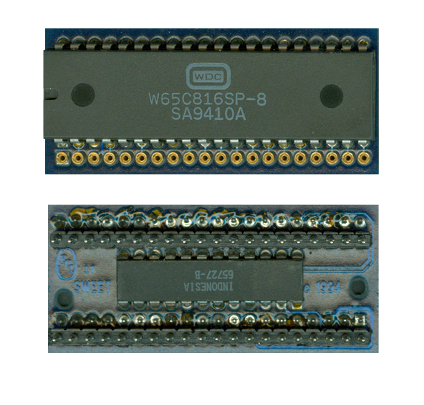

|


|

| The Sweet-16 is a 16-bit
65816 CPU replacement Upgrade for the Atari 400/800 and XL/XE
computers. Designed by Mike Holman of FTE, Sweet-16 was
one of many promised upgrades. He obtained limited
rights to certain ICD assets and supposedly some OSS assets,
but unfortunately many issues arose from him taking money and borrowed
equipment and never delivering on much of the products
promised. Then he completely disappeared from the Atari
scene. This is a shame, because if he had
delivered on much of what was announced, he would've
offered many sorely needed things in the 8bit Atari world.
Anyone with a manual or other
information or items from FTE, please contact the Atari
Museum by clicking
HERE |
Content to
be added, updated 3/25/2019 |